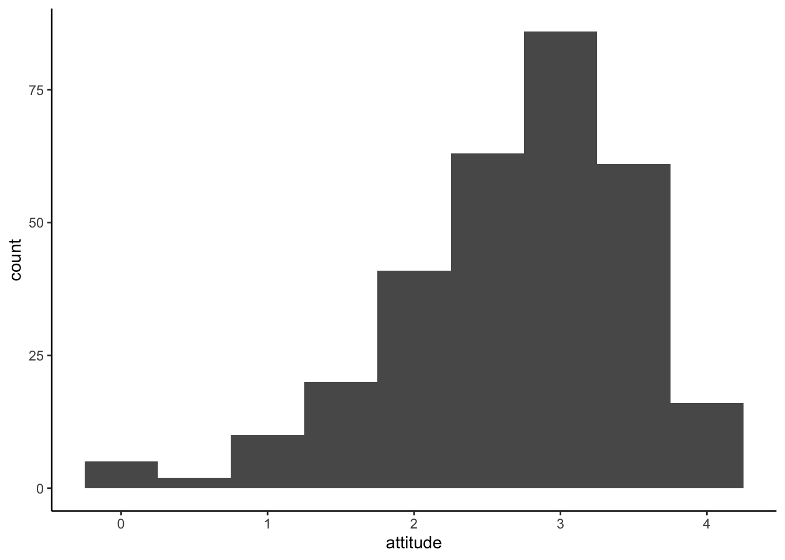

Lab 06: Visualizing Distribution
Set working directory to a source file.
`setwd(dirname(rstudioapi::getSourceEditorContext()$path))
Then, load the data.
solar_data <- read.csv("data/RES_STAT_Lab6_Data.csv")
solar_data$inno <- factor(solar_data$inno, levels = c("innovators", "early adopters", "early majority", "late majority", "laggards"), ordered = TRUE)
head(solar_data$inno)## [1] early majority laggards early adopters late majority innovators early adopters
## Levels: innovators < early adopters < early majority < late majority < laggardsBoxplot
A boxplot is a classic visualization of a distribution. You can run
the function in the base R or with the ggplot2 package. ##
Base R
boxplot(solar_data$attitude)You can also assign an object name for your plot.
bp <- boxplot(solar_data$attitude) #This still prints out the plot.
bp## $stats
## [,1]
## [1,] 0.625
## [2,] 2.250
## [3,] 2.875
## [4,] 3.375
## [5,] 4.000
##
## $n
## [1] 304
##
## $conf
## [,1]
## [1,] 2.773053
## [2,] 2.976947
##
## $out
## [1] 0.250 0.000 0.000 0.375 0.000 0.250
##
## $group
## [1] 1 1 1 1 1 1
##
## $names
## [1] "1"The object bp is a list containing information about the
plot.
$stat contains 1) lower whisker or -1.5 IQR, 2) lower hinge
or 25th quantile, 3) median or 50th quantile, 4) upper hinge or 75th
quantile, and 5) upper whisker or +1.5 IQR. $n is the
number of observations. $out list are values of outliers
that lie outside the whiskers See help(boxplot) for more
information.
The values in boxplot object can be access as a list. This can be
useful. For example, we could use $out to identify outliers
data in the dataset.
solar_data[solar_data$attitude %in% bp$out, ] ## id user deci sex age kno1 kno2 kno3 kno4 kno5 kno6 kno7 kno8 inno att1 att2
## 19 22 regular residence 2 male 47 3 1 5 5 5 5 5 1 early majority 1 1
## 38 44 regular residence 2 female 59 2 2 2 2 2 2 2 2 early adopters 1 1
## 118 141 regular residence 2 female 59 1 1 1 1 1 1 1 1 laggards 1 1
## 128 158 regular residence 2 female 39 1 1 1 1 1 1 1 1 late majority 1 3
## 157 198 small residence 2 male 72 1 3 2 1 1 1 1 1 laggards 1 1
## 281 350 small residence 2 female 50 2 1 1 1 1 2 1 1 late majority 2 1
## att3 att4 att5 att6 att7 att8 interest re_att1 re_att2 re_att3 re_att4 re_att5 re_att6 re_att7
## 19 1 1 3 1 1 1 definitely not 0 0 0 0 2 0 0
## 38 1 1 1 1 1 1 probably not 0 0 0 0 0 0 0
## 118 1 1 1 1 1 1 probably will 0 0 0 0 0 0 0
## 128 2 1 1 1 1 1 probably will 0 2 1 0 0 0 0
## 157 1 1 1 1 1 1 definitely not 0 0 0 0 0 0 0
## 281 1 1 1 1 1 2 probably not 1 0 0 0 0 0 0
## re_att8 re_kno1 re_kno2 re_kno3 re_kno4 re_kno5 re_kno6 re_kno7 re_kno8 attitude knowledge
## 19 0 2 0 4 4 4 4 4 0 0.250 2.750
## 38 0 1 1 1 1 1 1 1 1 0.000 1.000
## 118 0 0 0 0 0 0 0 0 0 0.000 0.000
## 128 0 0 0 0 0 0 0 0 0 0.375 0.000
## 157 0 0 2 1 0 0 0 0 0 0.000 0.375
## 281 1 1 0 0 0 0 1 0 0 0.250 0.250#%in% is a value matching function. We match value in $attitude with the outliers, $out.Multiple Boxes
When exploring the data, you can use boxplot to simultaneously check distributions of multiple items at once.
boxplot(solar_data[, c("att1", "att2", "att3", "att4", "att5")]) #check distributions of item att1-5Boxplots by group
You can use formula to create boxplots by each level of a factor. In
the formula attitude ~ inno, attitude is split
by the factor inno. The solar_data is the
dataset of variables in a formula.
xlab and ylab are labels for x- and y-axis,
respectively.
boxplot(attitude ~ inno, solar_data, xlab = "Innovator Groups", ylab = "Attitude Score")Boxplot with ggplot2
While the base R is simple, ggplot2 offers a more
coherent way of writing a code for graphics. It employs the “Grammar
of Graphics.” The main components are 1) a data,
2) aesthethics, and 3) geometries.
Data is the data you want to plot. Aesthetics aes() is
how you want to map the data to the plot scale. Geommetries (geom) is
the visual elements of the plot (e.g., lines, dots, bars)
There are other option layers, such as themes, statistics, coordinates, and facet. The graphics are built by the multiple layers.
The function ggplot is the main function to plot
graphics. The first argument is the data solar_data. The
second argument is aesthetics aes(). Inside we specify
y = attitude, meaning that we want to plot the value on
attitude on the y-axis. After that, we use a +
sign to tell the function that we still want to add more layers.
Then we add a geometry layer geom_boxplot() to create a
boxplot. Then + the theme layer
theme_classic().
library(ggplot2) #load the ggplot2 package
ggplot(solar_data, aes(y = attitude)) +
geom_boxplot() +
theme_classic() #Classic theme is the most similar to the APA style. Boxplot by groups
You can specify a factor x in aes() to
create boxplots by groups. In this case, we use inno for
grouping on the x-axis.
ggplot(solar_data, aes(x = inno, y = attitude)) +
geom_boxplot() +
theme_classic()
Histogram
If you want to see the shape of a distribution, you will need a histogram.
Base R
h <- hist(solar_data$attitude)h## $breaks
## [1] 0.0 0.5 1.0 1.5 2.0 2.5 3.0 3.5 4.0
##
## $counts
## [1] 6 7 11 30 47 95 75 33
##
## $density
## [1] 0.03947368 0.04605263 0.07236842 0.19736842 0.30921053 0.62500000 0.49342105 0.21710526
##
## $mids
## [1] 0.25 0.75 1.25 1.75 2.25 2.75 3.25 3.75
##
## $xname
## [1] "solar_data$attitude"
##
## $equidist
## [1] TRUE
##
## attr(,"class")
## [1] "histogram"The object h is a list of values for a histogram.
breaks = the boundary of bins. counts =
frequencies for each bin. density = estimated density
values. mid = midpoints for each bin. equidist
= logical, if the bin sizes are equal.
R will automatically decide how to bins look like. If you want your
histogram to look a certain way, you will use the argument
breaks. There are multiple ways to use the argument
breaks (see Help). We will use a vector to determine the
boundary of the bins.
# First create a vector from 0 to 4 with a 0.25 step.
b <- seq(0, 4, 0.25)
b## [1] 0.00 0.25 0.50 0.75 1.00 1.25 1.50 1.75 2.00 2.25 2.50 2.75 3.00 3.25 3.50 3.75 4.00# Then use b in the argument breaks.
hist(solar_data$attitude, breaks = b) # alternative: hist(solar_data$attitude, breaks = seq(0, 4, 0.25))
# use col for color and ylim for the range of y-axis.
hist(solar_data$attitude, breaks = seq(0, 4, 0.25), col = "lightsteelblue", ylim = c(0, 80))
See http://www.stat.columbia.edu/~tzheng/files/Rcolor.pdf for color names in R.
Histogram with ggplot2
For histogram aes(), we use x = attitude as
we plot the value of attitude on the x-axis. Then we add a
layer of geom_histogram.
By default, it will use 30 bins.
ggplot(solar_data, aes(x = attitude)) +
geom_histogram() +
theme_classic() ## `stat_bin()` using `bins = 30`. Pick better value with `binwidth`.We can specify a bin width using binwidth
ggplot(solar_data, aes(x = attitude)) +
geom_histogram(binwidth = 0.5) +
theme_classic() 
We can also change a border and a filll color with color
and fill.
ggplot(solar_data, aes(x = attitude)) +
geom_histogram(binwidth = 0.5, color = "red", fill = "pink") +
theme_classic()Histogram by groups
Because historgram is plot on the x-axis, if we want to split
histogram by groups, we need to create multiple of them and put them to
gether using a facet layer facet_wrap().
ggplot(solar_data, aes(x = attitude)) +
geom_histogram(binwidth = .5,
aes(y = ..density..), #plot density instead of frequency
color = "black",
fill = "steelblue") +
facet_wrap(~ inno) + # create subplots by inno and put them together
theme_classic()
Density Plot
Density plot shows the probability density of the distribution. ## Base R
plot(density(solar_data$attitude))
ggplot2
ggplot(solar_data, aes(attitude)) +
geom_density(color = "red", fill = "pink") +
theme_classic()
We can overlay the density plot on the histogram plot by layer them together.
ggplot(solar_data, aes(attitude)) +
# histogram layer
geom_histogram(binwidth = .25,
aes(y = ..density..), #histogram of density
color = "black",
fill = "white") +
# density plot layer
geom_density(alpha = .2, color = "forestgreen", fill = "forestgreen") + #alpha = transparent level
theme_classic() +
facet_wrap(~ inno)
Violin Plot
A violin plot is a hybrid between a density and a boxplot. ## Violin
with ggplot2 Violin plots are usualy used to compare
distributions for each leve of a factor. For the aes(), we
use x = inno to split plots by innovator groups.
y = attitude to plot the distribution on the
y-axis. fill = inno to fill color automatically by
innovator groups.
ggplot(solar_data, aes(x = inno, y = attitude, fill = inno)) +
geom_violin() +
theme_classic()
Violin plot with data points
We can add geom_jitter layer to illustrate how data
points distribute in the plot.
ggplot(solar_data, aes(x = inno, y = attitude, fill = inno)) +
geom_violin() +
geom_jitter(width = .15) + #width = 15% to keep most dots in each violin.
theme_classic()
Resource: ggplot in datacamp.
Copyright © 2022 Kris Ariyabuddhiphongs